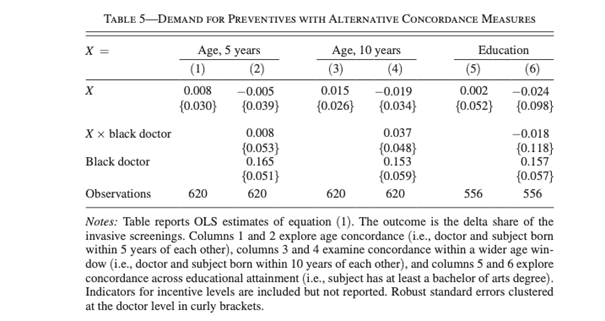
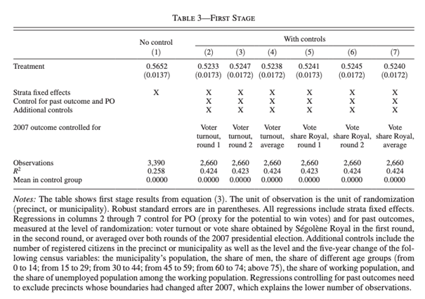
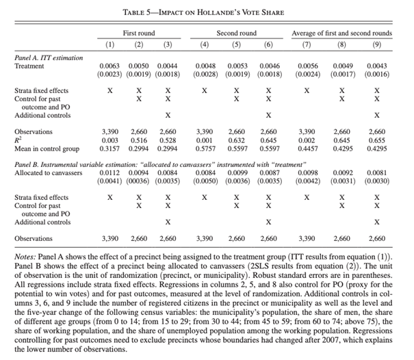

Policy analysis and policy evaluation – Spring semester 2025-2026
Seminar 1: RCTs
2026-02-22
About the slides
To design the slides for this course, I am using the layouts by Oswald et al. (2020), and adapted it to work with Quarto.
Overview
Today
- Alsan et al. (2019)
- Pons (2018)
Goal: understand design choices, identification, and interpretation when running an RCT.
Gathering your feedbacks :)
Let’s have a quick warm-up quizz!
Alsan, Garrick, and Graziani (2019)
Context
Can you summarize in a few sentences the setting and findings of the paper?
General culture: do you know about a research that made black citizens in the US very suspicious about medical institutions?
The Tuskegee experiment is amongst the worse medical experiment in the XXth century. The Tuskegee medical center was part of the few institutions where black people felt welcomed in the 1930s… until doctors decided not to tell some of their patients that they had syphilis… so that they could see what happens to people when syphilis does not get treated. They actively prevented their patients to get penicillin, a medicine curing syphilis widely available already.
The experiment broke the trust black citizens had in the medical institution, with effects decades after the end of the experiment in the 1970s (Breza et al. (2021) )
Why did the authors randomize the main treatment after observing redemption?
Why did Alsan, Garrick, and Graziani (2019) randomize the main treatment (the person being assigned to a black doctor) after observing who redeemed the clinic coupon?
- To ensure comparability between treatment and control groups for visit outcomes.
- To know the actual sample size (redeemers) before assigning doctors. Can you state why sample size matters?
Explanation
If treatment was randomized during recruitment, it might affect coupon redemption. That creates selection bias: groups differ before outcomes are measured.
Design intuition
Randomize as late as possible when randomization outcome could affect either participation or compliance. It maximizes the chances you will have a representative sample, but also your sample size, which affects the statistical power of your experiment.
Note that this is not always efficient (e.g. when you ask teachers to use a pedogical tool for a full year).
Why analyze Age and Educational Proximity?
Why is it important to analyze age proximity and educational proximity alongside race in this setting?
- They could be confounders if correlated with doctor race. In this case, it might be that race is just one dimension of social proximity that matters.
- Example: imagine that black doctors systematically tend to be closer in age to patients. Then we couldn’t be completely sure whether race is the driving factor of the positive effect or if the proximity is.
General advice
You should always question yourselves about what is exogeneously assigned in your setting and what is not. In the present case, randomization ensures that everyone has an equal probability to get a black doctor, but black doctors may differ in other ways from non-black doctors. If black doctors do differ in other ways to other doctors, then you are actually also giving a “shadow” treatment to participants.
What is the regression equation for Column (2)?
Write down the regression equation for Column (2).

What is the regression equation for Column (2)?
Write down the regression equation for Column (2).
\[\begin{equation*} \Delta_i = \alpha + \beta_1 \text{Age5}_i + \beta_2 (\text{Age5}_i \times \text{Black Doctor}_i) + \beta_3 \text{Black Doctor} + \beta_4 \text{Incentives \$5} + \beta_5 \text{Incentives \$10}+ \epsilon \end{equation*}\]
Note
Definitions
- \(\Delta_i = Post_i - Pre_i\)
- \(Age5_i = 1\) if ages of patient and doctor within 5 years
- \(BlackDoctor_i = 1\) if assigned to a Black doctor
- Incentives: \(5 / 10\) $ dummies
Interpretation of Column (2)
Select the correct answers
- For every additional 5 years of age of the doctor, there is a decrease of 0.5 percentage points of the demand for invasive tests
- Meeting a black doctor increases the demand for invasive tests, to a similar extent whether or not the age difference is larger than 5 years.
- Meeting a black doctor increases the demand for invasive tests by 0.16%.
- Conditional on pre-consultation demand, meeting a black doctor increases post-consultation demand by 0.16 percentage points.
- Meeting a black doctor increases the difference between pre and post consultation demand by 16 percentage points.
- There is no significant effect of Age proximity on demand for invasive tests.
Interpretation of Column (2)
- For every additional 5 years of age of the doctor, there is a decrease of 0.5 percentage points of the demand for invasive tests
- Meeting a black doctor increases the demand for invasive tests, to a similar extent whether or not the age difference is larger than 5 years.
- Meeting a black doctor increases the demand for invasive tests by 0.16%.
- Conditional on pre-consultation demand, meeting a black doctor increases post-consultation demand by 0.16 percentage points.
- Meeting a black doctor increases the difference between pre and post consultation demand by 16 percentage points.
- There is no significant effect of Age proximity on demand for invasive tests.
Interpretation of Column (6)
Provide similar interpretations as for Column (2).
Thinking together
What policy recommendations could follow from this study?
Pons (2018)
Randomization Strategy
What is the randomization strategy in this experiment? What are its advantages?
- It’s a stratified randomization.
- It ensures (near) exact balance in the characteristics on which you are stratifying.
- Useful for heterogeneity analyses and in cases there are very important characteristics on which there must be balance.
Computing the Potential Win Variable
In Pons (2018), potential win is a variable that allows to classify precincts according to whether one can expect the door-to-door campaign to have an effect on vote share.
How would you compute the potential win variable?
In the paper, it is:
\[\text{Potential Win} = \text{Fraction of nonvoters} \times \text{Left vote share among active voters (2007)}\]
Note that you could think of other possibilities based on other assumptions about political sensitivity of voters and non-voters.
Probability of Door-to-Door Campaigns
From Pons (2018):
First, I show the effect of a precinct being assigned to the treatment group (the intent-to-treat effect of the campaign), using the following OLS specification:
\[ Y_i = \alpha_1 + \beta_1 T_i + X_i^{\top} \lambda_1 + \sum_s \delta_{i1}^s + \epsilon_{i1}, \tag{1} \]
where \(Y_i\) is the outcome in precinct \(i\), \(T_i\) is a dummy equal to one if the precinct was assigned to the treatment group and zero if it was assigned to the control group, \(\delta_{i1}^s\) are strata fixed effects, and \(X_i\) is a vector of controls.
Secondly, I evaluate the effect of a precinct being actually allocated to canvassers (a local average treatment effect) with the following specification:
\[ Y_i = \alpha_2 + \beta_2 A_i + X_i^{\top} \lambda_2 + \sum_s \delta_{i2}^s + \epsilon_{i2}, \tag{2} \]
where \(A_i\) is a dummy equal to one if the precinct was allocated to the canvassers and zero otherwise, and is instrumented with \(T_i\); as shown in the following first-stage equation:
\[ A_i = a + b T_i + X_i^{\top} \lambda + \sum_s \delta_i^s + \nu_i. \tag{3} \]
Probability of Door-to-Door Campaigns
Complete the sentences:
The probability of having canvassers do a door-to-door campaign is ________ higher in precincts selected for treatment compared to control precincts.
The effect is significant at the __ level / insignificant. This corresponds to a situation with / without partial compliance.
The identification of the causal effect of the door-to-door campaign would have been impossible if this effect had been _____.

Probability of Door-to-Door Campaigns
The probability of having canvassers do a door-to-door campaign is 56 pp higher in precincts selected for treatment compared to control precincts. The effect is significant at the 1% level / insignificant. This corresponds to a situation with partial compliance. The identification of the causal effect of the door-to-door campaign would have been impossible if this effect had been null / insignificant.
Aᵢ dummy
The author does not actually estimate equation (2) with the \(\widehat{A}_i\) dummy. Instead, \(A_i\) is first estimated using equation (3), and the estimated \(\widehat{A}_i\) is used in equation (2). What would be an issue with running regression (2) as such ?
\[ Y_i = \alpha_2 + \beta_2 A_i + X_i^{\top} \lambda_2 + \sum_s \delta_{i2}^s + \epsilon_{i2}, \tag{2} \]
where \(A_i\) is a dummy equal to one if the precinct was allocated to the canvassers and zero otherwise, and is instrumented with \(T_i\); as shown in the following first-stage equation:
\[ A_i = a + b T_i + X_i^{\top} \lambda + \sum_s \delta_i^s + \nu_i.^{15} \tag{3} \]
The parties ultimately chooses where they send the canvassers. They may decide not to comply with the randomization based on private information about the importance of the precinct for them. Methodologically, this means \(\epsilon_{i2} \not\!\perp\!\!\!\perp A_i\)
Warning
Even in RCTs, you must be careful when considering compliance with the randomization, as this is endogeneous.
Vote Share Impact
Complete the sentences:
In treatment areas, the door-to-door visits increased Hollande’s vote share by ________ in the First Round, which represents a _____% increase, and by _____ in the Second Round (when controlling for strata fixed effects, past outcome, and additional controls). These effects are / are not significant at the 5% level. In areas that were actually allocated to canvassers (i.e., actually treated), the door-to-door visits increased the vote share by _____ in the First Round (when controlling for strata fixed effects, past outcome, and additional controls).

Vote Share Impact
In treatment areas, the door-to-door visits increased Hollande’s vote share by 0.44 pp in the First Round, which represents a 1.5% increase, and by 0.46 pp in the Second Round (when controlling for strata fixed effects, past outcome, and additional controls). These effects are are / are not significant at the 5% level. In areas that were actually allocated to canvassers (i.e., actually treated), the door-to-door visits increased the vote share by 0.84 pp in the First Round (when controlling for strata fixed effects, past outcome, and additional controls).
Thinking together
As a researcher, what arguments would you have given the Socialist Party to convince them to work on this randomized evaluation with you? What could have been some of their concerns?